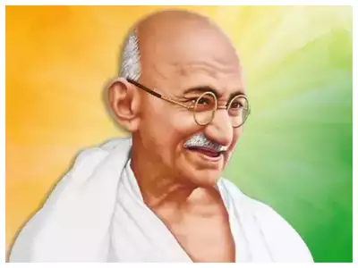

Ashoka Chakra
This is the motif taken up by Ashoka and portrayed on top of his pillars. The 24 spokes represent the twelve causal links taught by the Buddha and paṭiccasamuppāda (Dependent Origination, Conditional Arising) in forward and then reverse order.
Mahatma Gandhi
Mohandas Karamchand Gandhi was an Indian lawyer, anti-colonial nationalist and political ethicist who employed nonviolent resistance to lead the successful campaign for India's independence from British rule. He inspired movements for civil rights and freedom across the world.
Rani Laxmi Bai

Warrior queen of Jhansi — Unknown qualities of Rani Lakshmibai, sacrifice of life on the altar of freedom. View News. Make A Donation. Download Mobile App. Highlights: Events Available, Donation Option Available, App Available.